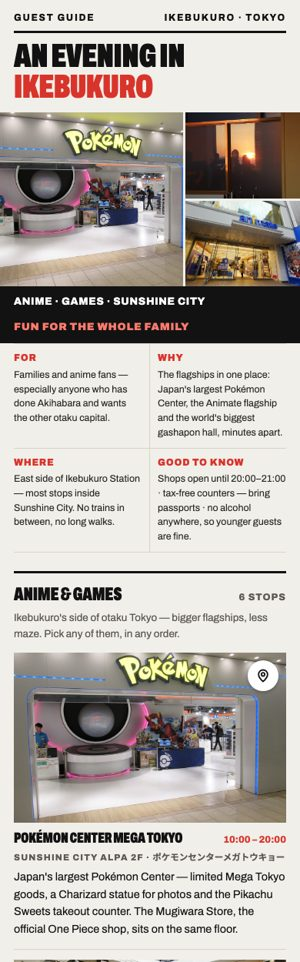
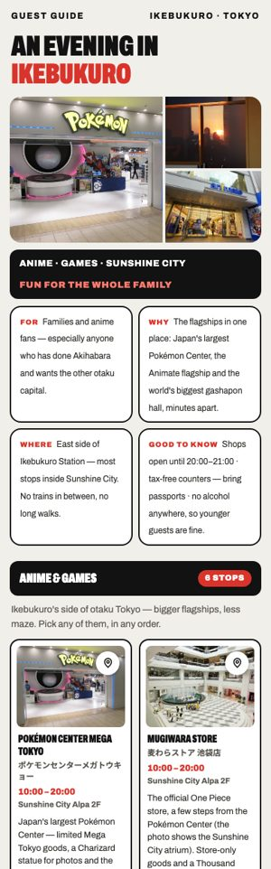
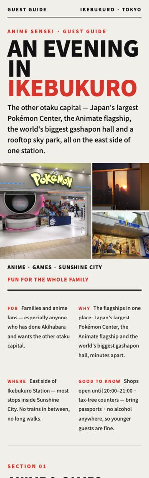
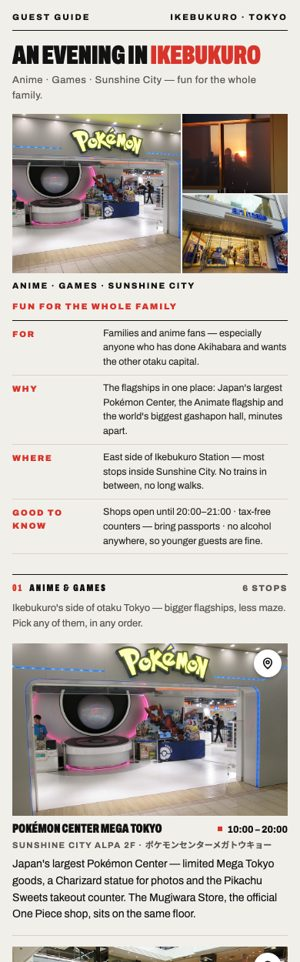
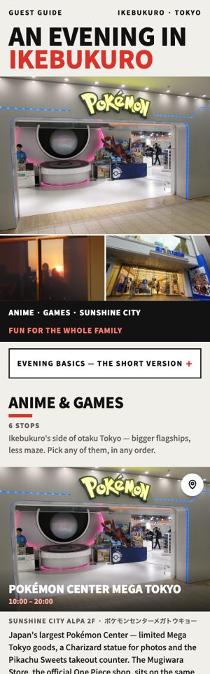

現行ページの「無駄な要素と余白」を削り、情報の重複をなくしたリデザイン5案。全案とも同じ内容（スポット9件・夕食9タイル・プロフィール）で、イントロは縦積みをやめてコンパクトにまとめてあります。選ばれた案が新しいパトリック式になります。
詰めた編集型。罫線は1本に統一し、各スポットの情報は「名前＋営業時間＋場所」の1行に集約。イントロは小さなラベルの2×2グリッド。

R1 を開くカードグリッド型。スポットを2列のコンパクトなカードにし、セクション見出しは黒帯＋赤チップ。イントロはインラインラベルのチップ行。

R2 を開く雑誌型。大きな写真と番号付き見出しで1スポットずつ見せる強い階層。イントロはリード文＋ファクトレールに圧縮。

R3 を開くミニマル・スイス型。ヘアラインと小さいキャプションラベルだけで組み、装飾は赤い四角のみ。イントロは1行ずつのファクトレール。

R4 を開く写真主導型。全幅写真に名前と営業時間だけを重ね、説明は下に短く。イントロは閉じた状態のアコーディオンに収納。

R5 を開くAll five variants carry the same content as the current production page (9 spots, 9 dinner tiles, guide profile with tour link). Screenshots: 390px width, top of each page.